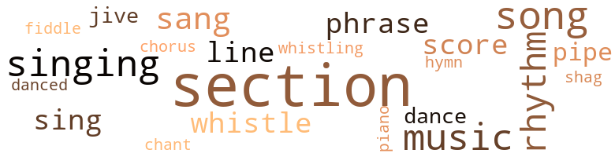
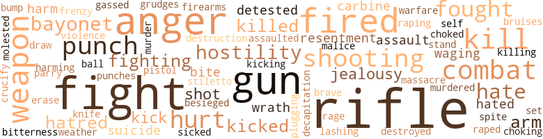

Chosen Few (A), by Rhodes, Hari (1965)
91 music-related terms matched in this text.
Most frequent terms in this topic: section (23); song (8); singing (7); music (7); rhythm (6)
chant.n.01
Definition: a repetitive song in which as many syllables as necessary are assigned to a single tone
| word | sentence |
|---|---|
| chant | " Havin ' you see him take low was bad ' nuff , but when you went up side his head , I guess that was jus ' too much , even for a shit mer - chant like him . |
chorus.n.01
Definition: any utterance produced simultaneously by a group
| word | sentence |
|---|---|
| chorus | From there Fisher went into a sexy verse and through another chorus , then into another tempo and a story about the home they had , and the car they had and the girl they had , and about jody being with her now . |
dance.n.01
Definition: an artistic form of nonverbal communication
| word | sentence |
|---|---|
| dance | Blood found Blue sitting against the wall across the dance room blowing the suds off the top of a glass of beer . |
dance.v.03
Definition: skip, leap, or move up and down or sideways
| word | sentence |
|---|---|
| danced | The driver 's eyes danced between the mirror and the road for the rest of the trip . |
| dance | " I 'll guess what , " said Blue , " if you dance in here agin without knockin ' . |
hymn.n.01
Definition: a song of praise (to God or to a saint or to a nation)
| word | sentence |
|---|---|
| hymn | The organist struck up another hymn and the collection of envelopes was under way . |
music.n.01
Definition: an artistic form of auditory communication incorporating instrumental or vocal tones in a structured and continuous manner
| word | sentence |
|---|---|
| music | As they got closer they could hear the sound of shrieking voices and blaring , stomping music . |
| music | His mis - givings stemmed from the fact that when he went on liberty up north he went to a different kind of night club , was surrounded by a different kind of crowd , heard varying kinds of music and was able to talk to various kinds of people . |
| music | By large and by far they grooved to one kind of music , and talked one kind of talk . |
| music | If Blood had his choice , he preferred to be with the Jersey kind of people , exposing himself to varying kinds of music and varying kinds of talk . |
| music | The only differences were that there was a different mode of dress being worn , a different sound of music coming from the juke box and different color faces giving the place its character . |
| music | The older Fisher , humming and gyrating along with the music , stopped dead still the mo - ment he recognized the uniformed young man coming up the aisle . |
| music | This chick 's got me pissed off now and every crack of th ' whip 'll sound like music . " |
phrase.n.02
Definition: a short musical passage
| word | sentence |
|---|---|
| phrase | His most identifiable phrase became " By th ' Gods of War ... " His exterior image was made even more potent by the helmet always down over the eyes , the freshly starched , sharply creased dungarees , the swagger stick , the spit-shined boots and a magnificent voice when calling cadence . |
| phrase | Occasionally the boy turned his head toward the woman as if to tell her something and each time he did , Blood expected to hear some quaint phrase like " Look maw , there 's one , " or " Is that a nigger , maw ? " |
| phrases | Every day Little Ray ran into a barrage of taunting phrases and comments at school . |
| phrase | Elijah Lynch , the boy from Georgia and a kid named Cox , from upstate New York , were right behind him , screaming the same phrase . |
piano.n.01
Definition: a keyboard instrument that is played by depressing keys that cause hammers to strike tuned strings and produce sounds
| word | sentence |
|---|---|
| piano | It was one of the first things he could remember hearing his mother play on their old , broken-down piano , and no one since ever played it with quite the same flair . |
pipe.n.04
Definition: a tubular wind instrument
| word | sentence |
|---|---|
| pipe | the kitchen table , the three men smoking cigarettes and Flo sucking on an old corncob pipe . |
| pipe | Without any announcement , Flo had taken the pipe from her apron , gone to a can in the cupboard and brought it back filled with tobacco . |
| pipe | " Down th ' pipe ? " |
rhythm.n.04
Definition: the arrangement of spoken words alternating stressed and unstressed elements
| word | sentence |
|---|---|
| rhythm | Between calls , the rhythm of eighty pairs of rubber heels and soles took over the cadence . |
| rhythm | It was easy to see that every boot in that formation felt the surge of swing and rhythm in their march . |
| rhythm | As far as any - one knew , Montford DI 's were the only ones who could stand perfectly still and call cadence for a moving formation with - out missing a step or a drop of rhythm . |
| rhythm | Those in-step fans had a pleasant rhythm . |
| rhythm | That cap was spinning with systematic rhythm and her eyes were riveted to the floor . |
| rhythm | A song , a rhythm , a beat . |
score.n.02
Definition: a written form of a musical composition; parts for different instruments appear on separate staves on large pages
| word | sentence |
|---|---|
| score | This had all the marks of a good score . |
| score | The score was made . |
| score | Such an affliction had caused many a man to fire on the wrong target , sometimes bolstering another man 's score , always lowering his own . |
| score | Men , long out of boot camp , making an attempt at their annual score for the record . |
section.n.01
Definition: a self-contained part of a larger composition (written or musical)
| word | sentence |
|---|---|
| section | They crossed Main Street and passed in silence through the white section of town . |
| section | When they arrived , they took a cab from the Wilmington bus station directly to a section of town that looked like a mil - lion other southern Negro communities , and then , ahead , Blood saw a small house atop a landscaped mound with a sloping lawn , surrounded by a bright , white picket fence . |
| section | Some of the men from the permanent personnel section , those out of boot training , laughed and snickered , but not the other recruits . |
| section | " Th ' whole training section if we do n't do something . " |
| section | As the cab rolled over them , Blood looked hard to his right toward what he remembered as the colored section of town . |
| section | " Training section . |
| section | His platoon had the reputation in the training section of letting it be known they considered themselves better than the others . |
| section | It was about two the next morning , when the entire train - ing section was suddenly roused and told to fall out on the front road . |
| section | " Oh , that 's right . . . th ' training section 's always last t ' hear anything . " |
| section | That day they took a cab to the bus station , got out and walked slowly down main street , through the white section , pining for trouble . |
| section | He was thinking about Blood Burrell , the new God of the training section . |
| section | " He 's already created tension in th ' training section and I got word this mornin ' that he 's tellin ' everybody in th ' chow line about th ' post breakin ' up . " |
| section | Right now , I can out - soldier any DI in this section and the other assistants can just forget it ... So what happens when time comes for a new DI ? |
| section | " How 're things goin ' over in th ' training section ? " he asked . |
| section | He even went so far as to hint that he would be happier out of the training section . |
| section | Word of the challenge that morning was all through the training section a half hour after it happened . |
| section | The next morning the training section vibrated with news of Marc Rivers . |
| section | Someone in the toilet section let out a resounding fart . |
| section | The biggest concern among the men in the permanent per - sonnel section was the drill team . |
| section | To him that meant they were in the white section of town . |
| section | Next morning , Blue and Blood stood in the chow line with some other men from the permanent personnel section , along with the other two DI 's , talking . |
| section | They were going in and out of all the barracks in the training section . |
| section | He had seen Blue go down , but could n't get to him because the section of the street was being covered by the town deputies . |
shag.v.01
Definition: dance the shag
| word | sentence |
|---|---|
| shag | That 's it . . . let 's shag outta here two at a time . |
sing.v.02
Definition: produce tones with the voice
| word | sentence |
|---|---|
| sing | Each one would run to a certain distance from him , whether from the rear or front , slow down to a brisk walk , render a snappy salute and sing out , " By your leave , sir ! " |
| sang | Halfway to the theater , Blood took over with his simplified " Won , tup , three , fourp . . . Won , tup , three , fourp ... " Only he did n't say it , he sang it , as did all DI 's at the Point . |
| sang | He yelled , he sang , he cried , he screamed , he praised , he cursed , he moaned , he chirped , he bellowed , he purred , all to the pleasure of his boots and his spectators . |
| sang | She signaled the choir and they sang . |
| sang | And the platoon sang : " Gon ' raise a ruckus t ' night . " |
| sing | Fisher , still stewing in anger over the white troops ' reaction to the platoon 's sing - ing , stood by silently during the fracas , hoping to see the white boy hurt or even killed . |
| sing | Thursday night the platoon was asked if they would n't sing on their way to the flick , as a favor to the stewards who wanted to hear them . |
| sang | Fisher called cadence and sang that night as he never had before , infecting the platoon as they marched . |
| sing | The platoon did n't sing going back to the bar - racks , but they did go through a few sharp executions they had picked up from the drill team . |
singing.n.01
Definition: the act of singing vocal music
| word | sentence |
|---|---|
| singing | Each man 's soul had caught the spirit and was singing inside its owner , " HEELS , HEELS ! '' |
| singing | He could hear the choir singing . |
| singing | The song they were singing was one of Fisher 's long-time favorites . |
| singing | When they opened the doors of the church , the singing inside stopped and the church became still and quiet Ray Fisher could see that a similar carpet had been put down in the center aisle of the church , leading all the way up to the pulpit . |
| singing | Slowly , voice by voice , those in the congregation who were singing along with the choir stopped , all watching the young Marine . |
| singing | Fisher felt good that night too , and started the platoon singing . |
| singing | The boy was singing in a moderate tone , " Eeny , meany , miney , moe , catch a nigger by . . . " That was as far as the song got . |
song.n.01
Definition: a short musical composition with words
| word | sentence |
|---|---|
| song | The song they were singing was one of Fisher 's long-time favorites . |
| song | The song was another of those Ray Fisher liked . |
| song | At the end of the song , the pastor came forward , gripping the sides of the pulpit , and smiled down at his congregation . |
| song | This time , Father himself came forward and was in place at the pulpit when the song ended . |
| song | The longer he stood there watching that man in the pulpit , the deeper the feeling went until , during a song Father requested from the choir , Ray pushed his way through the crowd to the center aisle and walked forward . |
| song | He went into a verse of a song called " Raise A Ruckus Tonight . " |
| song | The boy was singing in a moderate tone , " Eeny , meany , miney , moe , catch a nigger by . . . " That was as far as the song got . |
| song | A song , a rhythm , a beat . |
swing.n.05
Definition: a style of jazz played by big bands popular in the 1930s; flowing rhythms but less complex than later styles of jazz
| word | sentence |
|---|---|
| jive | Blue was a jazz caller , using a high-tempoed jive de - livery . |
| jive | His daddy was spook and his mammy was French , or was it th ' other way around . . . anyhow , he talks a lotta jive and keeps a bunch a ' broads runnin ' after him on liberty . |
tune.n.01
Definition: a succession of notes forming a distinctive sequence
| word | sentence |
|---|---|
| line | One of the boots from Clark 's squad had missed formation for chow and came streaking around the corner of the mess hall as the others stood waiting in line . |
| line | Blue noticed Fisher standing in line , not saying a word to anyone . |
| line | Just inside the door was a line of men waiting their turn . |
| line | Systematically the ushers picked them up in gold collection plates , then stacked them on the table below the pulpit and stood in a line facing the pulpit , waiting . |
violin.n.01
Definition: bowed stringed instrument that is the highest member of the violin family; this instrument has four strings and a hollow body and an unfretted fingerboard and is played with a bow
| word | sentence |
|---|---|
| fiddle | A little rest and they 'll be back on duty fit as a fiddle . " |
whistle.n.01
Definition: the sound made by something moving rapidly or by steam coming out of a small aperture
| word | sentence |
|---|---|
| whistles | They entered the theater to the sound of piercing screams , yells , whistles and applause from the other troops . |
whistle.v.01
Definition: make whistling sounds
| word | sentence |
|---|---|
| whistling | Blood knelt on his right knee , braced himself with his left toe by digging it into the ground , and caught Dorsey on the chin with a whistling right cross . |
| whistle | Monday morning Blood picked up his side arm , arm band , whistle and duty pickup truck . |
| whistle | Before it could go any further , the whistle blew for chow . |
| whistle | They smiled at each other as the whistle blew . |
316 violence-related terms matched in this text.
Most frequent terms in this topic: fight (30); rifle (28); anger (22); gun (20); rifles (17)
anger.n.01
Definition: a strong emotion; a feeling that is oriented toward some real or supposed grievance
| word | sentence |
|---|---|
| anger | You 'll find there 's a difference between bitterness and anger . . . one is a consuming , cancerous quality out of which comes nothing but self-destruction , while out of an anger can come many constructive things , if nothing more than the drive to get something done . " |
| anger | You 'll find there 's a difference between bitterness and anger . . . one is a consuming , cancerous quality out of which comes nothing but self-destruction , while out of an anger can come many constructive things , if nothing more than the drive to get something done . " |
| anger | He thought of the previous night and anger rose making him swear under his breath , but it instantly gave way to joy when he remembered that he had thrown the anteater-looking lieu - tenant on his ass . |
| anger | Clark by this time was numb with anger at both Simms and Blood . |
| anger | He was wet with sweat , dirty , tired and filled with anger . |
| anger | She was shaking with anger and her eyes were filled with tears . |
| anger | The Negro troops stood calmly still when she passed , some yawning , some showing plain indifference , some showing out - right disgust and anger , and some wishing they really had gotten a crack at that young , built thing . |
| anger | To anger him and cause him to make a false move . |
| anger | It was said so simply , so matter of factly , without malice or anger , that Blood was caught completely off guard . |
| anger | There was much more to be said for whispered words of endearment than hollered words of anger . |
| anger | Every time he broached the subject , she feigned anger or indecision . |
| anger | Blood was fuming with anger . |
| anger | His first reaction was one of blinding anger , then as time passed , that Friday evening in the slop - chute with Blue and Moreau , it dwindled to a flickering ember , but capable of being kindled by a little fanning . |
| anger | Somewhere amid the torn thoughts and anger he heard one of the cops say , " Come over here under th ' light so 's I can git a better look atcha . " |
| anger | Blood was seized by a gush of anger at that young , resentful bastard , then he caught himself thinking the fool , and sank back into his pillow . |
| anger | There was no anger in the exchange , just good , hard fun . |
| anger | Greer 's anger made him ponder the point a moment , then he relaxed and Dorsey put him down . |
| anger | Fisher , still stewing in anger over the white troops ' reaction to the platoon 's sing - ing , stood by silently during the fracas , hoping to see the white boy hurt or even killed . |
| anger | Clark was steeped in anger , not so much at the warrant , but at himself , out of humiliation and disgust for having goofed off on what was probably the easiest position during the entire firing course , slow fire prone at the five hundred . |
| anger | Blood took a deep breath and fought down the rising anger . |
| anger | His first reaction was shock , then anger , then he grinned . |
| anger | Blood could feel his chest heaving with anxiety and anger . |
assail.v.01
Definition: attack someone physically or emotionally
| word | sentence |
|---|---|
| assaulted | " Last night you assaulted an officer in the United States Marine Corps and , wrong or right , he wants satisfaction . |
bayonet.n.01
Definition: a knife that can be fixed to the end of a rifle and used as a weapon
| word | sentence |
|---|---|
| bayonets | The procedure was to inspect the rifles , then come back along the rear of the same squad inspecting the bayonets , which hung from the cartridge belt on the left side . |
| bayonet | If a bayonet was clean , he put it back in its scabbard , but if it was dirty or rusty , he threw it down to stick in the sand at the owner 's heel . |
| bayonet | He came across a rusty bayonet , brought it to the boot 's attention , then threw it down . |
| bayonet | Blood wiped the bayonet off on his own freshly starched dungarees , put it back in its scab - bard , picked the boy up by his biceps from the rear , pointed him in the direction of the sick bay and gave him a swift kick for propulsion . |
| bayonet | Down the back road , around the field house , across the bayonet course , through the thicket near the obstacle course , to a con - cealed clearing not more than ten feet from the banks of the bay . |
besiege.v.01
Definition: surround so as to force to give up
| word | sentence |
|---|---|
| besieged | In the head , he was besieged by questions and remarks con - cerning that one scene . |
bruise.n.01
Definition: an injury that doesn't break the skin but results in some discoloration
| word | sentence |
|---|---|
| bruises | Simms , without a word to Clark , got up , spitting dust , rubbing his bruises and mumbling as he recrossed the bridge and drove off . . . with lights . |
bump.n.01
Definition: a lump on the body caused by a blow
| word | sentence |
|---|---|
| bump | He scratched under his chin and picked the scab off a bump he must have cut shaving that morning . |
carbine.n.01
Definition: light automatic rifle
| word | sentence |
|---|---|
| carbine | By Thursday , the platoon had fired the MI , the carbine , the BAR and the .45 automatic . |
| carbine | Blood stuffed two grenades in each of his dungaree pockets , then at the last minute swapped his carbine for a BAR , wrapping two full bandoliers around his neck . |
craze.n.02
Definition: state of violent mental agitation
| word | sentence |
|---|---|
| frenzy | They were off again , this time with a controlled kind of frenzy , one trying to extract as much sap as possible from the other . |
crucify.v.01
Definition: kill by nailing onto a cross
| word | sentence |
|---|---|
| crucify | The next thing Blood remembered were the thick fingers that used to contaminate food on the island and he remembered those beady eyes that were steady only when he was ready to crucify someone . |
decapitation.n.02
Definition: killing by cutting off the head
| word | sentence |
|---|---|
| decapitation | He was so deeply involved with thoughts of decapitation he did n't see or hear Nat Pearson come in . |
destroy.v.04
Definition: put (an animal) to death
| word | sentence |
|---|---|
| destroyed | Big Mae Burrell , his deceased father , had destroyed Roy years before . |
draw.v.23
Definition: pull (a person) apart with four horses tied to his extremities, so as to execute him
| word | sentence |
|---|---|
| draw | It was a symbol of every - thing Roy considered unattainable and the closeness of it made him draw up . |
engage.v.07
Definition: carry on (wars, battles, or campaigns)
| word | sentence |
|---|---|
| waging | Two-Ton Jackson was waging his own brand of warfare , sending out rumors each day through his most trusted and mealy-mouthed carriers . |
| waging | He knew she was waging one hell of a battle with herself , and it was anybody 's guess who would win . |
erase.v.01
Definition: remove from memory or existence
| word | sentence |
|---|---|
| erase | Then a vivid , detailed image of Sue formed in his mind and he could n't erase it . |
fight.n.02
Definition: the act of fighting; any contest or struggle
| word | sentence |
|---|---|
| combat | He did not look forward to spending too much time around people whose idea of combat was the slash of a switch blade or straight razor . |
| combat | A simple thing like a weekend of liberty had turned into a combat problem . |
| combat | It was the first combat unit to be formed at the Point . |
| combat | No more combat units , no real soldierin ' , no nothin ' but some bullshit pretense at being Marines . " |
| combat | More to be said for an embrace than for the locking of bodies in combat . |
| combat | If a man could n't take what the DI 's dished out , he surely could n't take the pressure of combat . |
| combat | " Wonder what these cats would be like in combat ? " said Clark , still laughing . |
| combat | Blood put flank guard out simulating a combat march , but had it been one in truth the column would have been wiped out . |
| combat | I guess it takes more than thirteen weeks to make a fearless , combat - ready Marine out of a high school civilian , especially when they know this is not a combat zone . " |
| combat | What Roy ob - viously did n't know was that there were some combat units at Montford Point and at least two of them had distinguished themselves under fire . |
fight.n.05
Definition: a boxing or wrestling match
| word | sentence |
|---|---|
| fight | He did not look forward to the fight or fights which would inevitably occur before the night was over . |
| fights | He did not look forward to the fight or fights which would inevitably occur before the night was over . |
| fight | They had no stomach for this kind of fight . |
| fight | Moreau went to Blood and the fight was set . |
| fight | Thinking about the huts made him remember the night one outfit was preparing to ship out and a fight had sprung up between that unit and another one over something like a misplaced bottle of beer . |
| fight | Always somebody raising hell and almost always a fight . |
| fight | The fight was fast and furious . |
| fight | Dorsey was reluctant to think of a fight before that moment . |
| fight | This was the most difficult time - how to start a static , non-angry fight . |
| fight | The other three DI 's had prepared themselves for trouble in case Blood lost the fight they knew would take place . |
| fight | There was much more to be said for the sight of a woman 's face seconds after the climax of lovemak - ing than the sight of a battered opponent after a fight . |
| fight | Talk of the dispute during morning inspection and the sub - sequent fight spread from the training section through the camp with the speed of a brush fire . |
| fight | There was no sign of fight in anyone except Roy 's four peers . |
| Fights | Fights were springing up almost every night , none serious , but all with a grueling hostility , many times over nothing . |
| fight | She clung to him as he undressed her piece by piece , fight - ing for control and patience . |
| fight | " That fight took a long time . " |
| fight | When the fight was over , he put Blue in one of the trucks himself and had ridden back with him , confused over the issue as it now stood , and feeling that the world would one day be put in the hands of people like these insane southern animals . |
| fight | It was n't so much the fight that bothered him , it was that he had to fight people he could identify with . |
| fight | Jacksonville and most surrounding towns were un - merciful in their attitude toward Negroes after the fight . |
fight.v.02
Definition: fight against or resist strongly
| word | sentence |
|---|---|
| fought | Many exciting visions fought to keep him from sleeping . |
| fight | Everyone teased Blood a little , including Rose Anna , until she saw he was hopelessly trying to fight his way out of the stomp 's tight grip . |
| fought | They simply fought back and ended up on reservations . |
| fight | Roy was hotheaded and unless he learned that there was a time to fight and a time to wait he might end up being murdered by some redneck bastard just like that little fellow who 'd been glaring back at him . |
| fought | He was on the verge of tears , but he fought them back . |
| fighting | Red pulled her knees up and curled on the seat fighting the urge to cry . |
| fight | After all , it was n't their fault that they were too young for the big war , but there was always the possibility of another one and they , the valiant young skinheads of that day , stood ready to fight , or flunky , as the case might be . |
| fight | Had he decided to fight there on the post his entire police force would have more than likely been wiped out . |
| fight | He 'd fight in a minute for himself or his daughter , but for somebody else , especially us , I could n't say . " |
| fighting | He had never been particularly fond of fighting , each time going through a calming-down period of the shakes and violent disgust . |
| fought | These rumors got back to Blood , but he fought himself to keep his head , at least until his platoon was out of training . |
| fighting | It 's rough , but people like you and me do n't do too well fighting ourselves , and yet that 's our biggest drag . . . being caught between what we feel and what others say is right . |
| fought | Around her he was just mama 's baby and not the man he fought so hard to be . |
| fight | He 'd had just about enough of southern white ideologies and was ready to fight . |
| fight | They should have known they would have to go through much more , most of it an effort to get Blood 's nose open enough to fight and get shot and if possible to frighten Rose Anna enough to give in . |
| fight | She had said he would have been a fool to fight , still he wished he had . |
| fight | " What do they fight about ? " |
| fight | They git all worked up dancin ' to that gutbucket noise on th ' juke box and drinkin ' nat stomp 'til all they wan na do is fuck or fight . |
| fought | Fisher fought his way to consciousness , his mouth dry , his breath quick . |
| fighting | Their jobs and pro- motions would depend on attitude and social agility and not on fighting ability or prowess with a rifle . |
| fight | It looked as though some of those docile people from the earlier crowd had gone to fetch weapons and come back to fight . |
| fight | It was n't so much the fight that bothered him , it was that he had to fight people he could identify with . |
| fight | I wo n't fight it , he promised himself , maybe some of me rubbed off on him too . |
| fought | Blood took a deep breath and fought down the rising anger . |
firearm.n.01
Definition: a portable gun
| word | sentence |
|---|---|
| firearms | " Boots do n't carry firearms . . . they carry night sticks . . . you hafta get t ' gether with Sergeant Castro sometime t ' day so he can show 'em how to use 'em and you will hafta go over their general orders and guard procedure with 'em . " |
fury.n.01
Definition: a feeling of intense anger
| word | sentence |
|---|---|
| rage | For the first time since the Twentieth started training , Fisher was late waking himself and the platoon ; it sent him into a rage . |
gag.v.06
Definition: cause to retch or choke
| word | sentence |
|---|---|
| choking | He had just enough time to drink in the smooth white skin , the full , alert breasts , the smoothly curved buttocks and the mound of sand colored hair before he got a fierce erection and dashed from the room choking with embarrassment . |
| choked | Children in the world less than twenty years and already choked with futility . |
gas.v.01
Definition: attack with gas; subject to gas fumes
| word | sentence |
|---|---|
| gassed | She had a way about her , a feminine way which gassed a man who appreciated the existence of women as much as Blood did . |
grudge.n.01
Definition: a resentment strong enough to justify retaliation
| word | sentence |
|---|---|
| grudges | Most of the permanent personnel were glad Blood had won , but a few , still carrying grudges born during their own training against DI 's , wished he had lost . |
gun.n.01
Definition: a weapon that discharges a missile at high velocity (especially from a metal tube or barrel)
| word | sentence |
|---|---|
| gun | These jodies are too close to home not to be able to run in th ' house , grab a gun , and come right back ready for open season on dark meat . |
| gun | The gun crew sat by passively watching the other batteries along the beach bang away at the sleeves being pulled by planes over - head . |
| gun | The gun director announced that planes pulling sleeves for the last battery were approaching and for the gun com - manders to take over . |
| gun | The gun director announced that planes pulling sleeves for the last battery were approaching and for the gun com - manders to take over . |
| guns | When the sleeves were in position , all four guns fired one round simultaneously , hitting not the sleeves , but the " Rivers , Marcus , sir . " |
| gun | His khaki uniform was a mass of wrinkles from neck to trouser cuffs and his web gear - gun belt , lanyard and leg - gings - were dirty and sloppily worn . |
| gun | He had his arm band on , his gun belt and gun . |
| gun | He had his arm band on , his gun belt and gun . |
| gun | When Reeves came over , the gun was put at the base of his jaw bone and he was told to gather his other deputies , that scroungy little bitch , and git . |
| guns | If they went for their guns , he would go for the shorter one , try to get his gun , kill him , and try to get the other one . |
| gun | If they went for their guns , he would go for the shorter one , try to get his gun , kill him , and try to get the other one . |
| gun | " Do n't git smart with me niggah , I 'll . . . " As he went for his gun Rose Anna stepped forward , hands raised . |
| gun | " Naw , but a gun 's a gun . |
| gun | " Naw , but a gun 's a gun . |
| gun | A shot - gun kicks , but this MI jus ' rocks ya , like a baby in a cradle . |
| gun | The duty sergeant would n't let him have it and Fisher almost took it at gun point , but he knew he probably could not get off of the post . |
| gun | He drew his gun . |
| gun | " What 'd this culud boy with th ' gun look like ? " |
| gun | He was no more than ten feet away , his hand resting on his gun , the others beside him . |
| gun | There was the sharp report of a gun and a slap of pain in his left thigh . |
| gun | He spun around , falling , to see the deputy Carl with his gun in his hand . |
| gun | Marlin was smiling and did n't see Cecil , the bull deputy , lean out from his doorway and fire with his hand gun at Two-Ton . |
| guns | He longed at that moment to gather his daughter and flee somewhere , anywhere to escape uniforms , guns , killing , regimentation . |
harm.v.01
Definition: cause or do harm to
| word | sentence |
|---|---|
| harming | " I 'm not worried about you harming me , but why hide in my garage ? " |
hate.n.01
Definition: the emotion of intense dislike; a feeling of dislike so strong that it demands action
| word | sentence |
|---|---|
| hate | The hate on his face stood out like a searchlight , as it did on the faces of the white Ma - rines , on the faces of the other cops , and on the faces of the Negro Marines . |
| Hatred | Hatred grew in him like a poisonous vine , squeezing his mind tighter and tighter in its malignant grip . |
| hatred | A sleep filled with fear and hatred . |
| hatred | Two-Ton had reached the point where he could n't go on without making some move to satisfy his gnawing hatred for Blood . |
| hate | He wanted to tell him that there was no hate in what he was going to do and that perhaps , after training , they might go out , get drunk together and cry over it or laugh about it . |
| hatred | The hatred they felt was stronger against the men than against the women . |
| hate | I 'm sorry , man . . . I 'm sorry . . . Blood was so filled with hate he could n't think for awhile . |
hate.v.01
Definition: dislike intensely; feel antipathy or aversion towards
| word | sentence |
|---|---|
| detested | She had called him a boy , an image he detested . |
| hate | In case you do n't know it , some of us hincty , fancy-talking northern niggers are concerned about black women , and we hate to see the same thing hap - pening now that happened when black women did n't have a damn thing to say about who they opened their legs for . |
| hated | " Like that lineup last night ... do you have any idea how I hated that ? |
| hate | " And you 're gon na hate t ' leave boot camp , are n't you , boot ? " |
| detested | Fisher had an evasiveness about him which Blood detested , which made him difficult to reach . |
| hate | Probably said something as juvenile as " I 'll hate you , " or " I thought more of you than that , " or " I should have known this would happen , " all the while opening her legs . |
| hated | Two-Ton Jack - son hated that kind worst of all . |
hostility.n.01
Definition: a hostile (very unfriendly) disposition
| word | sentence |
|---|---|
| hostility | The MP 's face did n't show anything in par - ticular , but Blood sensed his hostility . |
| hostility | Even when Reeves and his Adam 's - appled deputy came in , Blue did n't feel the hostility the others felt . |
| hostility | Fights were springing up almost every night , none serious , but all with a grueling hostility , many times over nothing . |
| hostility | At that moment , he felt as though he could expect hostility from the entire camp , save Blue . |
| hostility | Some - how it seemed to help him when he was troubled , and he was troubled now ; not so much by the apparent hostility between Jackson and Burrell , but by his growing concern over his daughter Sue . |
hurt.v.04
Definition: cause damage or affect negatively
| word | sentence |
|---|---|
| hurt | Blood did n't want to hurt the young punks if he could help it , but it was time to show them that even Negro Marines got a fair amount of training . |
injury.n.01
Definition: any physical damage to the body caused by violence or accident or fracture etc.
| word | sentence |
|---|---|
| harm | Please , do n't get shook , I 'm not here to do you harm . " |
| hurt | " By car . . . it 's parked around th ' corner , " he answered quickly , pushing aside his hurt pride . |
| hurt | There were questions of course , like " How does it feel , man ? " or " Did that razor hurt much ? " or " I 'll bet that sand itches like hell , do n't it ? " all rendered in the friendliest of tones and meaning , making Clark grateful for their friendship and proud to be one of them . |
| harm | " Because I did n't want to make trouble for him , for myself or for us . . . one hint of trouble or harm to me and I 'd be restricted to quarters for the summer , or sent back , and that would end these pleasant , peaceful nights we have together , talking and comforting one another ... I like you so much , Robert , yet I 'm afraid , maybe of you , probably of myself . |
| hurt | On the other hand , maybe she would have gotten hurt too and he would n't have wanted that . |
| hurt | Fisher , still stewing in anger over the white troops ' reaction to the platoon 's sing - ing , stood by silently during the fracas , hoping to see the white boy hurt or even killed . |
jealousy.n.01
Definition: a feeling of jealous envy (especially of a rival)
| word | sentence |
|---|---|
| jealousy | For some unexplainable reason he groaned with sickness and what he knew instantly to be jealousy . |
| jealousy | Ramsey Reeves swelled with the exuberance of a child at Christmas whenever he and Red were together , and yet each time he went through pangs of jealousy and insecurity . |
| jealousy | Blood could see the jealousy in her eyes , but she was handling it beautifully , which was one of those things which made her the person she was . |
kick_back.v.02
Definition: spring back, as from a forceful thrust
| word | sentence |
|---|---|
| kicking | He thought about kicking off his shoes , but it would n't take long for the bus to cover the forty-odd miles from Wilson to Jacksonville . |
| kicked | The man sputtered and kicked in an effort to speak . |
| kick | This was not to say that the white troops did n't kick up too , but Ne - groes had a different way of doing damn near everything . |
| kick | " Sir , if you start down at th ' other end , , you might kick twelve asses . |
| kicked | Blue grinned and kicked a small stone near his foot . |
| kicked | The four boots kicked up a small cinder squall leaving . |
| kicks | A shot - gun kicks , but this MI jus ' rocks ya , like a baby in a cradle . |
| kicked | Shots kicked dirt up around him , but he scooted under the truck unhurt . |
kill.v.10
Definition: cause the death of, without intention
| word | sentence |
|---|---|
| kill | Let 's kill a few of these bastards and take th ' long rest ourselves . |
| kill | There are four cops here , all armed and ready to kill as many as they can , as fast as they can reload . |
| kill | If that ole bitch does anything to Darly , I 'll kill her . . . " " She ever try t ' give you a hard time before ? " |
| kill | During training , all they wan na do is kill th ' DI , and I think th ' only women who understand are those from a tough background or those who join th ' women Marines . |
| kill | " First chance I get , " said Clark as the tears came forth , " I 'm gon na kill that hooked-nosed motherfucker ! " |
| killed | Every night someone was hurt or killed and the local police force let it be known that as long as it was niggers killing niggers it was all right with them . |
| killing | Every night someone was hurt or killed and the local police force let it be known that as long as it was niggers killing niggers it was all right with them . |
| kill | If they went for their guns , he would go for the shorter one , try to get his gun , kill him , and try to get the other one . |
| killed | Fisher , still stewing in anger over the white troops ' reaction to the platoon 's sing - ing , stood by silently during the fracas , hoping to see the white boy hurt or even killed . |
| kill | He was talking to himself , swearing to find them , swearing to kill them both when he did . |
| killed | There was talk of rousing the colored population and putting some more bodies up there with the nigger who killed Ramsey Reeves . |
| killed | Reeves was killed last night , too . " |
| kills | " We 've been on good terms with the people of Jacksonville since this camp first opened back in forty-two and just because one man blows his top and kills the chief of police does n't mean we hafta lose our heads too . |
| kill | Let 's kill 'em all and get it over with once and for all . " |
| kill | Just before they smothered me I heard Two-Ton copping a plea to give them as much of his loot as they wanted if they did n't hurt or kill him . |
| kill | How many Japs you kill , big brother ? |
knife.n.02
Definition: a weapon with a handle and blade with a sharp point
| word | sentence |
|---|---|
| knife | Dorsey took the knife from Greer 's hand . |
malice.n.01
Definition: feeling a need to see others suffer
| word | sentence |
|---|---|
| spite | " Ma 's worried about you , " he said , in spite of his feeling . |
| malice | It was said so simply , so matter of factly , without malice or anger , that Blood was caught completely off guard . |
molest.v.01
Definition: harass or assault sexually; make indecent advances to
| word | sentence |
|---|---|
| molested | " Miss Azel says one of these boys molested her . |
murder.n.01
Definition: unlawful premeditated killing of a human being by a human being
| word | sentence |
|---|---|
| murder | Guys like Blue were seldom , if ever , taken seriously ; therefore given unwritten permission to get away with murder . |
murder.v.01
Definition: kill intentionally and with premeditation
| word | sentence |
|---|---|
| murdered | Roy was hotheaded and unless he learned that there was a time to fight and a time to wait he might end up being murdered by some redneck bastard just like that little fellow who 'd been glaring back at him . |
musket_ball.n.01
Definition: a solid projectile that is shot by a musket
| word | sentence |
|---|---|
| ball | The boots in the pit were having a ball . |
open_fire.v.01
Definition: start firing a weapon
| word | sentence |
|---|---|
| fired | When the sleeves were in position , all four guns fired one round simultaneously , hitting not the sleeves , but the " Rivers , Marcus , sir . " |
| fired | It had the sound of a small bore weapon being fired at close range . |
| fired | " Now , what 's so all fired important that ya got t ' come bustin ' in here this time a ' night . " |
| fired | Blood was with Blue in Blood 's quarters discussing the correct procedure for snapping in , uti - lization of the small bore range , where .22 caliber rifles were fired to give the recruits the sense of chamber explosions and the smell of gunpowder . |
| fired | The boy who fired expert in the Seventeenth was still high man among the re - cruits . |
| fired | The recruits fired in relays , each taking his target for study and display , depending on the score . |
| fired | His platoon spent the larger part of the next afternoon practicing sighting , breathing and trigger squeeze , emphasizing the importance of a thing many men who had never fired a heavy weapon before might experience . |
| fired | Some - how , some men got the idea that they could help the rifle put the bullet where they wanted it by lurching forward as the weapon was fired , either in an effort to oppose the kick , or because it was impossible to believe that the weapon could readily send a shell that far without their help . |
| fired | Each group fired ten rounds from each of the three distances , two hun - dred , three hundred and five hundred yards . |
| fired | Then the groups changed places and the pit gang fired . |
| fired | When both groups had fired , the pit gang was brought up to the five hundred yard line , while the regular range gang stayed . |
| fired | The tech sergeant , Willoughby , took a rifle and asked to have an A target run up , fixed a hasty sling for the offhand position and fired one shot at the bulls-eye that looked the size of a pinhead from that dis - tance . |
| fired | Satisfied it was n't , he took his own rifle , fixed the sling , put one round in the chamber , called for the crew to stay put in the pit and fired . |
| fired | Blood fired again and the target went down . |
| fired | By Thursday , the platoon had fired the MI , the carbine , the BAR and the .45 automatic . |
| fired | On the afternoon they fired the BAR 's , Tanback somehow got his selector lever on automatic . |
| fired | When they left the two hundred yard line , after having fired ten rounds slow , offhand , and ten rounds rapid , sitting , Clark was ahead of both the burly sergeant and the warrant officer . |
pain.v.02
Definition: cause emotional anguish or make miserable
| word | sentence |
|---|---|
| hurt | Every night someone was hurt or killed and the local police force let it be known that as long as it was niggers killing niggers it was all right with them . |
| hurt | " It 's not worth getting hurt over and I 'm sure he could n't take it all " She stepped forward and kissed him warmly , let - ting her lips rest ever so lightly on his before parting , whis - pered a hasty farewell and slipped through the door . |
| hurt | Just before they smothered me I heard Two-Ton copping a plea to give them as much of his loot as they wanted if they did n't hurt or kill him . |
parry.v.01
Definition: impede the movement of (an opponent or a ball)
| word | sentence |
|---|---|
| parry | Blood decided to parry Blue 's levity for some serious in - formation . |
pistol.n.01
Definition: a firearm that is held and fired with one hand
| word | sentence |
|---|---|
| pistol | " A . . . young culud boy come out ' chair dis ' enin ' , put a pistol at mah haed and ax ' me wheah some folks was upstairs . |
punch.n.01
Definition: (boxing) a blow with the fist
| word | sentence |
|---|---|
| punch | The tall boy turned , probably expecting to see one of his playful Nineteenth Platoon shipmates , and got a hard punch deep in his belly . |
| punch | He was pleased as punch . |
| punch | The same push had knocked Greer off balance and without a blink , he had put Penney on his back with a devastating punch . |
| punch | As far as they were concerned , Greer threw a lucky punch that morn - ing and the only thing which stood between them and absolute proof was time . |
| punch | Tan replied in the same subtle manner , '' I saw Greer throw that punch . . . there was n't a fuckin ' thing lucky about it . . . I 'd say he 's done some puggin ' and a lotta street fightin ' . . . this oughta be good . . . " " Look at 'em siltin ' over there with their little noses in th * air , " said Clark . |
| punch | The punch was a solid one , but Dorsey threw it without putting his full weight behind it . |
| punch | The punch sizzled through the air , splitting molecules , sending sonic waves across the water , tickling the bark on the trees with its breeze , only to be picked off in mid-air by Blood 's quick-moving hands . |
| punch | The punch was so well planned and so beautifully planted that it made Dorsey let out a loud snor - ing sound and close his eyes , before he had even started to fall . |
| punch | He made up his mind the instant Lee drew back that if Lee threw the punch , the fuse was lit . |
| punches | He was moving the upper part of his body like a fighter rolling with the punches . |
punch.v.01
Definition: deliver a quick blow to
| word | sentence |
|---|---|
| plugging | That threw his life out of kilter , but he kept plugging away at his duties as an officer . |
rape.n.03
Definition: the crime of forcing a woman to submit to sexual intercourse against her will
| word | sentence |
|---|---|
| assault | Fisher felt like making a frontal assault , but only a fool hits overwhelming odds head on . |
| assault | Blood could see the luster in those bright eyes fading under Fisher 's assault and he wanted to help , but that was out of the question . |
rape.v.01
Definition: force (someone) to have sex against their will
| word | sentence |
|---|---|
| raping | " Maybe they think ours is just a boot camp in name only ... that we let our boots do whatever they please , when they please , like going on liberty and raping white girls . |
| raped | The other night , for instance , Reeves should have been told to go fuck himself , but no , they wake up a whole campful of men on th ' word of one bitch who claimed she was raped and nobody says I 'm sorry , or we 'll see that it does n't happen again . . . because it will happen again , just as soon as th ' next white bitch wants to claim she 's been had by black hands . |
resentment.n.01
Definition: a feeling of deep and bitter anger and ill-will
| word | sentence |
|---|---|
| resentment | Fisher was at his side all the time , doing his job methodi - cally , beautifully , always maintaining his aloof resentment . |
| bitterness | You 'll find there 's a difference between bitterness and anger . . . one is a consuming , cancerous quality out of which comes nothing but self-destruction , while out of an anger can come many constructive things , if nothing more than the drive to get something done . " |
| resentment | Even his mother 's passivity had become an object of resentment to him . |
resist.v.04
Definition: withstand the force of something
| word | sentence |
|---|---|
| stand | I 'll stand in front a ' your target if you stand in front of mine first . " |
rifle.n.01
Definition: a shoulder firearm with a long barrel and a rifled bore
| word | sentence |
|---|---|
| rifles | Forty recruits , moving with the speed of light , dropped what they were doing , put rifles back in the rack , shoe-shining gear away , letter-writing equipment away , disrobed , and sat on their bunks at rigid attention , holding their knees and waiting . |
| rifle | Blood skipped chow Monday morning in favor of some extra sack time , but saw to it that Blue woke him early enough to hold rifle inspection . |
| rifle | By the time he reached the middle of the third squad , Blood had developed a method of slapping that rifle out of a boot 's hand after it was in the inspections arms position . |
| rifles | The procedure was to inspect the rifles , then come back along the rear of the same squad inspecting the bayonets , which hung from the cartridge belt on the left side . |
| rifle | Monk was working over his rifle stock with linseed oil . |
| rifle | He got his rifle from the rack , took the thong case from its compartment in the butt and started rubbing oil into the rifle stock . |
| rifle | He got his rifle from the rack , took the thong case from its compartment in the butt and started rubbing oil into the rifle stock . |
| rifle | Blood had been conspicuously absent since shortly after rifle inspec - tion . |
| rifle | Blood led Clark , with his rifle at port arms , to a secluded clear - ing behind the chapel . |
| rifle | When Blue came out , they were in a tight , well-lined formation , lockerboxes on end at each man 's right side where his rifle would normally be at order was an appetizing new lawn , covered with the greenest grass he had seen in a long time and her presence , plus his thoughts of what must have happened that night , had him wondering . |
| rifle | Three more times during the ride Blood saw men walking guard duty , helmet liners sitting squarely on their heads , cartridge belts fastened securely around their middles , rifle perched on one or the other shoulder . |
| rifle | Fisher got his helmet , went to the door leading to the squad bay and ordered the platoon outside for rifle inspection . |
| rifle | without a hitch , finding not one unsatisfactory rifle or bayo - net . |
| rifle | He snatched Clark 's rifle and threw it down in the sand , then sent Dorsey , leader of the second squad , in to get his razor . |
| rifle | Clark picked his rifle up out of the sand and took his place at the head of his squad . |
| rifle | The rifle was going to give him trouble when it came cleaning time that evening . |
| rifles | The light coat of oil required to keep rifles from succumbing to the moisture of the area would cause the sand to stick to the metal parts in a thick layer . |
| rifle | Attention was taken away from him shortly after rifle inspection for a while when Blood marched the Twentieth Platoon around behind the field house to the weatherbeaten outdoor boxing ring . |
| rifles | The next thing anybody knew , the troops had gotten rifles and ammo and had themselves a regular little battle going among those little huts . |
| rifles | Fisher had them practicing stacking rifles when Blood reached the field . |
| rifles | Dorsey leaned on his stack and it collapsed , sending five rifles to the sand . |
| rifle | He got up when the platoon returned from chow , dressed , and held morning rifle inspection . |
| rifle | Right off the bat , Blood found grit in Tanback 's rifle . |
| rifles | He was going to let it pass with a warning until he found it in five more rifles . |
| rifles | Having dropped a stack of rifles at in - spection that morning , and having been put under sedation by Blood down by the bay , he was ordered to sleep with the rifles in the stack he dropped . |
| rifles | Having dropped a stack of rifles at in - spection that morning , and having been put under sedation by Blood down by the bay , he was ordered to sleep with the rifles in the stack he dropped . |
| rifles | He was given the choice of sleeping on the floor or on the rifles . |
| rifles | A handful of men walked guard duty in the squall , hunched under their ponchos and helmet liners , rifles slung upside down to keep the water out of the chambers and barrels . |
| rifle | That week , the Seventeenth Platoon started snapping in for the rifle range , which meant that the Twentieth was only four weeks away . |
| rifles | Blood was with Blue in Blood 's quarters discussing the correct procedure for snapping in , uti - lization of the small bore range , where .22 caliber rifles were fired to give the recruits the sense of chamber explosions and the smell of gunpowder . |
| rifle | Sure will be a relief to fire that damn rifle instead of just carryin ' it around on our shoulders . " |
| rifle | Going to the rifle range meant two weekends without liberty . |
| rifle | The following week Marlin 's platoon came back from the rifle range with a little better than fifty per cent qualification and Moreau 's boys went for their week . |
| rifles | He watched his boys closely all week but the only real indication he could get of how they might shoot was on the small bore range , firing .22 caliber rifles . |
| rifles | The sound of those rifles and the smell of gunpowder meant more to them than just something men do . |
| rifles | As soon as the rifles were cleaned , the same boots who got the rifles and ammo from the armory , returned the re - maining ammo and the .22 caliber rifles . |
| rifles | As soon as the rifles were cleaned , the same boots who got the rifles and ammo from the armory , returned the re - maining ammo and the .22 caliber rifles . |
| rifles | As soon as the rifles were cleaned , the same boots who got the rifles and ammo from the armory , returned the re - maining ammo and the .22 caliber rifles . |
| rifle | Some - how , some men got the idea that they could help the rifle put the bullet where they wanted it by lurching forward as the weapon was fired , either in an effort to oppose the kick , or because it was impossible to believe that the weapon could readily send a shell that far without their help . |
| rifle | An hour later the convoy rolled into the rifle range . |
| rifle | The tech sergeant , Willoughby , took a rifle and asked to have an A target run up , fixed a hasty sling for the offhand position and fired one shot at the bulls-eye that looked the size of a pinhead from that dis - tance . |
| rifle | Satisfied it was n't , he took his own rifle , fixed the sling , put one round in the chamber , called for the crew to stay put in the pit and fired . |
| rifle | Their jobs and pro- motions would depend on attitude and social agility and not on fighting ability or prowess with a rifle . |
| rifle | He came out a few minutes later wearing his jacket and carrying his rifle . |
| rifle | He stood perfectly still watching Marlin take his rifle butt and break the lock on the armory door , then go in and come out minutes later with four bando - liers of ammo and some grenades . |
shoot.v.02
Definition: kill by firing a missile
| word | sentence |
|---|---|
| shot | " She shot me down . |
| shot | " Whoever shot him did n't get a very good group , " Tan continued . |
| shot | Every time he made a try to get to the deputy who shot Blue , a close shot would make him take cover again , until the last time he looked up , the deputy was down , hit by someone else . |
shooting.n.02
Definition: killing someone by gunfire
| word | sentence |
|---|---|
| shooting | Snapping in was the Point 's way of describing the dry firing practice necessary for any kind of decent shooting with live ammo on the range . |
| shooting | He ex - pected them to reach a certain spot and lunge at him , or go for their weapons and start shooting . |
| shooting | A white tech sergeant was there to show them billeting , give them a chow schedule and a shooting schedule for the week , and tell them where to get shooting jackets and score books . |
| shooting | A white tech sergeant was there to show them billeting , give them a chow schedule and a shooting schedule for the week , and tell them where to get shooting jackets and score books . |
| shooting | The entire week was to be spent concentrating on good shooting . |
| shooting | Monday , with a bright sun for heat and inspiration , the Twentieth Platoon marched out to B range to begin its first real day of shooting . |
| shooting | As the awed recruits reacted to the spectacular shooting , Willoughby walked over to Blood . |
| shooting | The con - versation was going from man to man on shooting ability . |
| shooting | Blood had heard about the trouble in the squad bay that first night , but did n't say anything out of regard for the recruits ' shooting concentration and because it was almost over now and he really did n't care what happened as long as it did n't bring a wall down on him . |
sic.v.01
Definition: urge to attack someone
| word | sentence |
|---|---|
| sicked | " Almost did once , but she sicked them educated muscles of hers on me and I could n't hold it . |
| set | His beady , almost hidden eyes set on the tall Negro standing on the edge of the sidewalk . |
slaughter.n.03
Definition: the savage and excessive killing of many people
| word | sentence |
|---|---|
| massacre | When th ' cavalry won a battle it was a defeat and when th ' Indians won it was a massacre . " |
stiletto.n.01
Definition: a small dagger with a tapered blade
| word | sentence |
|---|---|
| stiletto | Greer , whose bunk was a top berth right by the door , was cleaning his fingernails with a stiletto he had brought from home when the white youngster came in . |
sting.n.03
Definition: a painful wound caused by the thrust of an insect's stinger into skin
| word | sentence |
|---|---|
| bite | The club was still jumping and crowded , but the curfew at the nurses ' home had taken quite a bite out of the female portion . |
| bite | The ride from Wilmington in a cab had taken a large bite out of his ready cash , but he did n't care . |
suicide.n.01
Definition: the act of killing yourself
| word | sentence |
|---|---|
| self-destruction | You 'll find there 's a difference between bitterness and anger . . . one is a consuming , cancerous quality out of which comes nothing but self-destruction , while out of an anger can come many constructive things , if nothing more than the drive to get something done . " |
| suicide | Blood was really in a bind now because he could n't see the other cop and making a move without knowing would be suicide . |
| suicide | Some of the recruits wanted to try , but to ask would have been sure suicide . |
twenty-two.n.02
Definition: a .22 caliber firearm (pistol or rifle)
| word | sentence |
|---|---|
| .22 | Blood was with Blue in Blood 's quarters discussing the correct procedure for snapping in , uti - lization of the small bore range , where .22 caliber rifles were fired to give the recruits the sense of chamber explosions and the smell of gunpowder . |
violence.n.01
Definition: an act of aggression (as one against a person who resists)
| word | sentence |
|---|---|
| violence | " These bastards do n't know anything but violence and fear . |
war.n.03
Definition: an active struggle between competing entities
| word | sentence |
|---|---|
| warfare | Two-Ton Jackson was waging his own brand of warfare , sending out rumors each day through his most trusted and mealy-mouthed carriers . |
weapon.n.01
Definition: any instrument or instrumentality used in fighting or hunting
| word | sentence |
|---|---|
| weapon | It had the sound of a small bore weapon being fired at close range . |
| arm | He had his arm band on , his gun belt and gun . |
| weapon | This , Blood reasoned , was Two-Ton 's weapon . |
| arm | Monday morning Blood picked up his side arm , arm band , whistle and duty pickup truck . |
| arm | Monday morning Blood picked up his side arm , arm band , whistle and duty pickup truck . |
| arm | Not a brutal or mauling kind of force , but one which pro- vides a steel arm for them to lean on or nudge them when they have a tendency to hedge . |
| weapons | He ex - pected them to reach a certain spot and lunge at him , or go for their weapons and start shooting . |
| weapon | He stood at parade rest while the sergeant at the armory checked each weapon and each number , according to regulation . |
| weapon | His platoon spent the larger part of the next afternoon practicing sighting , breathing and trigger squeeze , emphasizing the importance of a thing many men who had never fired a heavy weapon before might experience . |
| weapon | Some - how , some men got the idea that they could help the rifle put the bullet where they wanted it by lurching forward as the weapon was fired , either in an effort to oppose the kick , or because it was impossible to believe that the weapon could readily send a shell that far without their help . |
| weapon | Some - how , some men got the idea that they could help the rifle put the bullet where they wanted it by lurching forward as the weapon was fired , either in an effort to oppose the kick , or because it was impossible to believe that the weapon could readily send a shell that far without their help . |
| weapon | There was something invigorating about the smell of gunpowder and the feel of a weapon jumping in their young hands . |
| weapons | The recruits chattered a mile a minute as they cleaned their weapons , showered and dressed . |
| weapon | Nothing he said could make them believe he did n't purposely set that lever just to see how the weapon would handle on automatic . |
| weapons | Grimly , silently , they went to their barracks and came out with their weapons , then made their way to the armory for ammunition before going to the gate to meet Pearson . |
| weapon | Each man sat with cold determination in his heart , clutching his weapon , eyes straight ahead . |
| weapons | It looked as though some of those docile people from the earlier crowd had gone to fetch weapons and come back to fight . |
weather.v.01
Definition: face and withstand with courage
| word | sentence |
|---|---|
| brave | Home of the brave spooks who put up with the crap . |
| weather | " Look , Blood , I 'm just trying to show you some things that might make it easier for you to weather the storm . |
whip.v.04
Definition: strike as if by whipping
| word | sentence |
|---|---|
| lashing | One was having a recruit make a transport pack by lashing together his knap - sack and his haversack , filling both sacks with sand , then wetting the sand down , which gave it an enormous amount of added weight . |
wrath.n.01
Definition: intense anger (usually on an epic scale)
| word | sentence |
|---|---|
| wrath | No noise , no laughing , no grab-ass under penalty of the DI 's wrath , which was in most cases worse than death . |
| wrath | He turned his wrath on the congregation . |
86 religion-related terms matched in this text.
Most frequent terms in this topic: church (18); God (16); Paradise (7); chapel (5); Lucifer (3)
catholic.n.01
Definition: a member of a Catholic church
| word | sentence |
|---|---|
| Catholics | The Catholics , on the other hand , saw it every Sunday going to chapel mainside . |
chant.n.01
Definition: a repetitive song in which as many syllables as necessary are assigned to a single tone
| word | sentence |
|---|---|
| chant | " Havin ' you see him take low was bad ' nuff , but when you went up side his head , I guess that was jus ' too much , even for a shit mer - chant like him . |
chapel.n.01
Definition: a place of worship that has its own altar
| word | sentence |
|---|---|
| chapel | Sears had the advantage of being able to ask for recruits to clean the chapel weekly and of not being cooped up in a kitchen all day . |
| chapel | Sears gave Marc a mint to suck on for a few minutes , then took him out into the chapel where the squad was wind - ing up its cleaning chore . |
| chapel | Blood led Clark , with his rifle at port arms , to a secluded clear - ing behind the chapel . |
| chapel | Blood did n't go away this time , but sat on the back steps of the chapel , watching . |
| chapel | Blood sat on the chapel steps , feeling pretty rotten about the whole mess but determind to see it through . |
church.n.02
Definition: a place for public (especially Christian) worship
| word | sentence |
|---|---|
| church | Up to that time she had made herself a part of the church as head of the usher board and personal secretary to Father . |
| church | Earlier that evening , Fisher had heard some men in the chow line talking about a church they passed in Wilmington . |
| church | Only one other church in his memory bore that name . |
| church | They rang with the depth and clarity of the church bells he remembered from his childhood . |
| churches | Then he read in a newspaper about the leader of the Tabernacle of Spiritual Guidance being on a tour of his churches and expected to hold a never-before-excelled revival meeting on Friday night . |
| church | Aside from those already inside the church , a sizable crowd had gathered at the entrance outside . |
| church | It was about eight twenty when the convoy of Cadillacs pulled up in front of the church . |
| church | The first two cars stopped a little past the church entrance . |
| church | Five men jumped out and rushed back to the limousine which had stopped in front of the church steps . |
| church | They covered the space between the car and the steps , then took the carpet up the steps to the door of the church . |
| church | When they opened the doors of the church , the singing inside stopped and the church became still and quiet Ray Fisher could see that a similar carpet had been put down in the center aisle of the church , leading all the way up to the pulpit . |
| church | When they opened the doors of the church , the singing inside stopped and the church became still and quiet Ray Fisher could see that a similar carpet had been put down in the center aisle of the church , leading all the way up to the pulpit . |
| church | When they opened the doors of the church , the singing inside stopped and the church became still and quiet Ray Fisher could see that a similar carpet had been put down in the center aisle of the church , leading all the way up to the pulpit . |
| church | Ray did n't move from his partially concealed spot as the earth god walked into the church , the hem of his maroon silk robe dragging the carpet . |
| church | There was room on either side of Father 's throne for a girl to stand , each with a double-sized , long-handled church fan . |
| church | That walk was just like the time in Chicago when Mother Fisher prompted little Ray to join the church formally . |
church.n.04
Definition: the body of people who attend or belong to a particular local church
| word | sentence |
|---|---|
| church | One of the lesser Gods was pastor of the local church . |
| church | The weath - er was sticky that night and every dark face in that church had perspiration heads on it . |
| church | His mind was on his father and the pitiful sight of those people in that church telling that charlatan personal details of their lives . |
confession.n.05
Definition: the document that spells out the belief system of a given church (especially the Reformation churches of the 16th century)
| word | sentence |
|---|---|
| confession | She told him about the meeting in the garage and about Fisher 's confession of previous visits to her place . |
cult.n.03
Definition: followers of an unorthodox, extremist, or false religion or sect who often live outside of conventional society under the direction of a charismatic leader
| word | sentence |
|---|---|
| cult | He could see his father 's face glaring down at him , resisting his efforts to disrupt his carefully built cult , yet not striking back out of love for his son . |
| cult | He imagined himself at the head of the drill team , going through one of their most diffi - cult and most impressive maneuvers . |
curate.n.01
Definition: a person authorized to conduct religious worship
| word | sentence |
|---|---|
| pastor | One of the lesser Gods was pastor of the local church . |
| pastor | At the end of the song , the pastor came forward , gripping the sides of the pulpit , and smiled down at his congregation . |
deity.n.01
Definition: any supernatural being worshipped as controlling some part of the world or some aspect of life or who is the personification of a force
| word | sentence |
|---|---|
| divinity | Place your offerin ' inside th ' envelope , rememberin ' there is divinity in givin ' . |
eden.n.01
Definition: any place of complete bliss and delight and peace
| word | sentence |
|---|---|
| Paradise | He drove slowly out the dark road to Jacksonville , then took the road to Paradise Point where many of the mar - ried officers stationed at Camp Lejeune lived . |
| Paradise | That dirty - He waited another half hour to be sure , then drove back over to Paradise Point . |
| Paradise | Nat Pearson was worried more than ever as he entered the Paradise Point community entrance off the highway . |
| paradise | " Sounds like a real paradise . " |
| Paradise | They passed Paradise Point . |
| Paradise | He made two trips a day to mainside in his new job , and on every trip he drove through Paradise Point , past the Pear - son house . |
| Paradise | His aged convertible whined its way out of Paradise Point and along the highway to Jacksonville . |
| Paradise | Pearson had arranged for a house in the officers ' community of Paradise Point . |
god.n.03
Definition: a man of such superior qualities that he seems like a deity to other people
| word | sentence |
|---|---|
| God | I pledge alle - giance to the flag , without a black stripe , of the United States of America and to the Republic for which it stands , branded on the hides of God knows how many slaves , one nation under God and the white man , indivisible , with liberty for whites and justice for the rich . |
| God | I pledge alle - giance to the flag , without a black stripe , of the United States of America and to the Republic for which it stands , branded on the hides of God knows how many slaves , one nation under God and the white man , indivisible , with liberty for whites and justice for the rich . |
| God | We might be God 's chosen few , but there would be no win this AM . |
| God | That really struck the fear of God in the others . |
| Gods | His most identifiable phrase became " By th ' Gods of War ... " His exterior image was made even more potent by the helmet always down over the eyes , the freshly starched , sharply creased dungarees , the swagger stick , the spit-shined boots and a magnificent voice when calling cadence . |
| Gods | " By th ' Gods of war , boot , you missed formation . |
| God | " Yeah . . . nobody ever comes here . . . this is not God 's country . " |
| God | Thank God . |
| God | He was thinking about Blood Burrell , the new God of the training section . |
| God | God 's chosen messenger . |
| Gods | One of the lesser Gods was pastor of the local church . |
| god | Father Fisher leaned over and whispered something to the local god . |
| God | For a moment , it was as if he could see his mother at the organ , her head bobbing , her chin high , working those black and white keys as if God had his hands on her shoulders , filling her with inspiration . |
| God | This man is no more a messenger of God than your garbage man . |
| God | Lettum be , Lee . . . fuh God 's sake , lettum be ! " |
| God | " For God 's sake , come on . " |
| God | God knows , she thought , after tonight I can see why . |
| God | It was as if God were on the verge of tears . |
| God | Time to start using some of that God given mother-wit , instead of hawkbowels and bull - shit . . . He stopped talking , suddenly remembering . |
| God | Thank God for Blue . |
godhead.n.01
Definition: terms referring to the Judeo-Christian God
| word | sentence |
|---|---|
| almighty | " Uh huh . . . another case of man 's almighty faculty for making bass ackwards decisions . " |
hell.n.01
Definition: any place of pain and turmoil
| word | sentence |
|---|---|
| hell | " What in the hell was all that ? " asked Blood . |
| hell | So shit , I sure as hell was n't gon na go failin ' over her . |
| hellhole | The whole thing made him too sick to talk about Now they were going back to that hellhole of a post , which did n't help his disposition any . |
hindu.n.02
Definition: a person who adheres to Hinduism
| word | sentence |
|---|---|
| Hindu | He was a blues wailer , a Hindu priest , a town crier , an Indian witch doctor , a balladeer , a Greek fisher , an Italian cook , all in one . |
hymn.n.01
Definition: a song of praise (to God or to a saint or to a nation)
| word | sentence |
|---|---|
| hymn | The organist struck up another hymn and the collection of envelopes was under way . |
messiah.n.03
Definition: the awaited king of the Jews; the promised and expected deliverer of the Jewish people
| word | sentence |
|---|---|
| Messiah | He was more like an earthly Messiah . |
prayer.n.01
Definition: the act of communicating with a deity (especially as a petition or in adoration or contrition or thanksgiving)
| word | sentence |
|---|---|
| prayer | " Let us bow our heads in a prayer of thanksgiving . " |
| prayer | Father held his head majestically high during the prayer . |
| prayer | Let us bow our heads in prayer that it is not too late for that poor youn ' un to rid himself of Lucifer 's hell-bound spirit . |
preacher.n.01
Definition: someone whose occupation is preaching the gospel
| word | sentence |
|---|---|
| preachers | Even the colored college graduates they knew were washing dishes unless they were doctors , lawyers , dentists or preachers . |
protestant.n.01
Definition: an adherent of Protestantism
| word | sentence |
|---|---|
| Protestants | That meant Protestants and non religious members of the platoon . |
saint.n.02
Definition: person of exceptional holiness
| word | sentence |
|---|---|
| angels | " May I say , " said Father , " that your choir has th ' sound of angels . " |
satan.n.01
Definition: (Judeo-Christian and Islamic religions) chief spirit of evil and adversary of God; tempter of mankind; master of Hell
| word | sentence |
|---|---|
| devil | What the devil was she doing on those nights out and why did n't she say anything to him about it ? |
| devil | A little more than halfway to the door , he heard his father 's voice , " Fear not , children , th ' spirit of the devil is everywhere . |
| Lucifer | Lucifer has taken that boy 's body and come into our midst to disrupt and split our unified spirits . |
| Lucifer | Let us bow our heads in prayer that it is not too late for that poor youn ' un to rid himself of Lucifer 's hell-bound spirit . |
| Lucifer | ... Oh heaven - ly Spirit , reach out from your divine realm and wrap your arms around that unfortunate boy . . . show him that you are th ' stronger power , not Lucifer , not that red-eyed , grinnin ' devil who takes th ' spirit of our children and turns it against their elders . |
| devil | ... Oh heaven - ly Spirit , reach out from your divine realm and wrap your arms around that unfortunate boy . . . show him that you are th ' stronger power , not Lucifer , not that red-eyed , grinnin ' devil who takes th ' spirit of our children and turns it against their elders . |
sermon.n.02
Definition: a moralistic rebuke
| word | sentence |
|---|---|
| sermons | And does she know that you do n't even preach sermons on these tours ? |
siren.n.01
Definition: a sea nymph (part woman and part bird) supposed to lure sailors to destruction on the rocks where the nymphs lived
| word | sentence |
|---|---|
| sirens | One of the MP 's had no more than opened the door when two police cars came screaming around the corner , no sirens , and stopped in the area usually reserved for parked buses . |
| siren | When he got close enough , his breathing sounded like a water-soaked , low - pitched motorcycle siren . |
temple.n.03
Definition: an edifice devoted to special or exalted purposes
| word | sentence |
|---|---|
| temples | At that moment , he wanted to get under her skirt so much , his temples were actually throbbing . |
worship.n.01
Definition: the activity of worshipping
| word | sentence |
|---|---|
| worship | The only things we do n't seek from them are ways to have fun and worship , whereas they do n't seek any - thing from us except labor , or talent if you please , if there 's a special job at hand and a little diplomacy is needed . " |
| worship | " Th ' Holy Spirit has provided us with a glorious night for worship . " |
worship.v.02
Definition: show devotion to (a deity)
| word | sentence |
|---|---|
| worshipped | He was not to be screamed or yelled at , but rather worshipped , silently , reverently , with the distance usually afforded piety . |